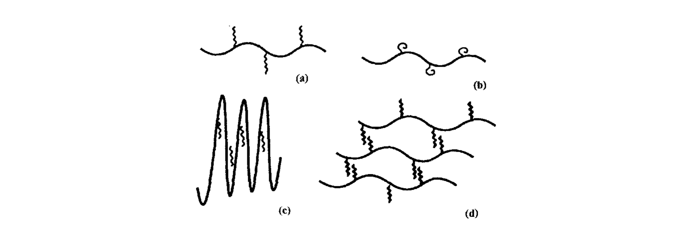
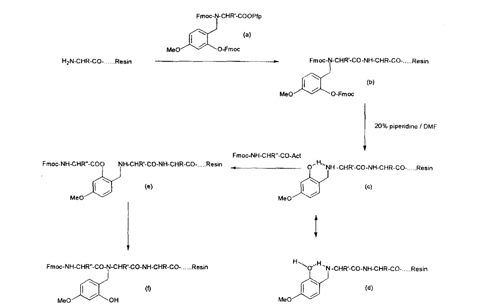
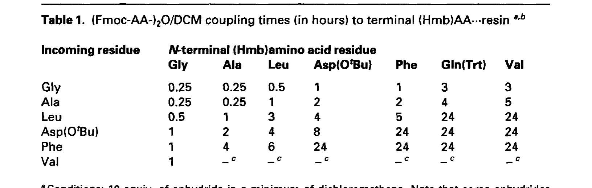
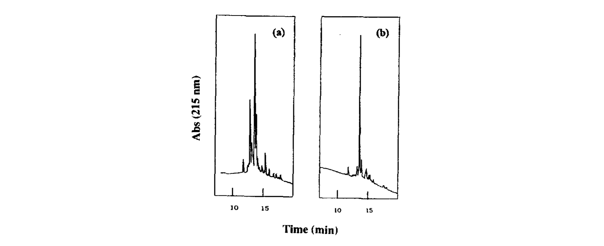
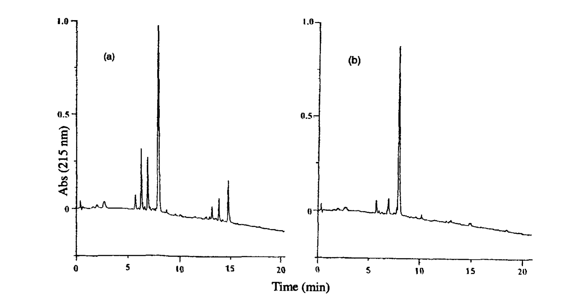
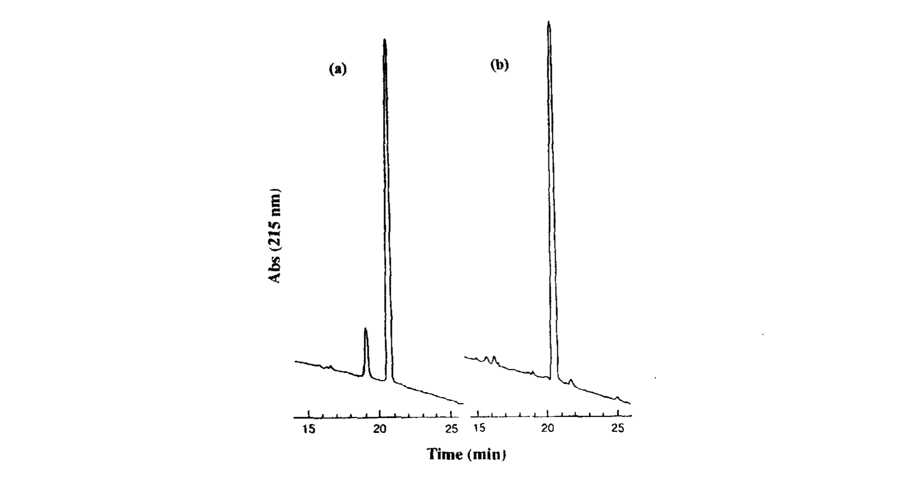
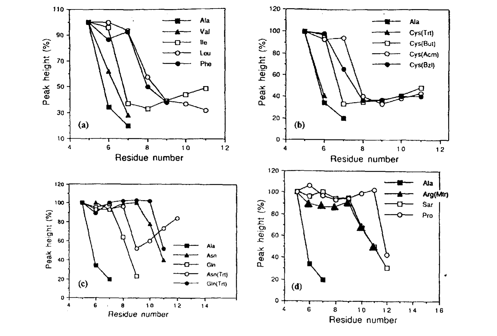

第五章 困难多肽 (Difficult Peptides)
——《Fmoc Solid Phase Peptide Synthesis: A Practical Approach》学习笔记
原书作者: Martin Quibell & Tony Johnson | 整理日期: 2026-06-28
固相多肽合成(SPPS)的绝对前提是：积累固相产物的每一步反应必须干净高效。然而，自从Merrifield发明SPPS以来，肽化学家就长期被一个问题困扰——某些多肽序列在合成过程中会出现反应效率的突然崩溃，这类序列被称为"困难肽"(difficult peptides)。
本章系统描述了对困难肽现象的理解历程，以及目前最通用、最有效的解决方案——骨架酰胺保护(backbone amide protection)策略，特别是Hmb (2-hydroxy-4-methoxybenzyl)保护基的应用。理解困难肽的形成机制并掌握应对策略，是成功合成中长链多肽的关键技能。
在SPPS被引入后短短几年内，研究者就发现某些氨基酸序列存在特殊的合成问题。其主要特征包括：
反应动力学突然下降，导致氨基端(amine terminus)的酰化(acylation)反应不完全；
即使重复偶联(repeated coupling)或延长反应时间(prolonged reaction time)，效果也十分有限；
该现象通常发生在合成进行到6-12个氨基酸残基(residue)时；
当引入β-分支残基(β-branched residues)，如Ile、Val、Thr时，问题尤为严重。
这些观察结果暗示，问题并非来自单一反应步骤的化学失败，而是整个固相基质(solid-phase matrix)发生了物理化学性质的剧变——肽链在树脂上形成了有序的聚集结构(aggregated structure)。
Figure 1展示了固相合成中肽链-树脂复合物的四种可能聚合态：

Figure 1. 固相合成中肽链-树脂复合物的聚合态示意图：(a) 完全溶剂化(fully solvated)；(b) 分子内聚集(intramolecular aggregation)；(c) 聚合物骨架溶剂化不良(poor solvation of polymer backbone)；(d) 分子间聚集(intermolecular aggregation)
如图1所示，四种状态代表了溶剂化与聚集的不同程度：
(a) 完全溶剂化(fully solvated)：肽链和聚合物链充分伸展，所有反应位点完全暴露，反应试剂可自由接近。这是理想状态。
(b) 分子内聚集(intramolecular aggregation)：肽链自身折叠形成分子内氢键(intramolecular H-bonds)，导致氨基端被部分遮蔽，降低了反应可及性。
(c) 聚合物骨架溶剂化不良：聚合物骨架自身发生塌缩(collapse)，阻碍了试剂扩散到肽链的活性位点。
(d) 分子间聚集(intermolecular aggregation)：不同肽链之间通过骨架酰胺氢键形成有序的分子间交联结构。这是最严重的情况，等效于树脂上产生了额外的"交联度"，使得整个基质变得不可渗透。
根本原因：困难肽的根本原因是肽骨架之间形成的分子间氢键(inter-backbone H-bonding)，这种氢键模式类似于天然蛋白质中的β-折叠(β-sheet)结构。一旦这种聚集结构形成，溶剂分子和反应试剂都被排斥在外，导致后续的偶联和脱保护反应几乎无法进行。
准确识别聚集的发生是解决困难肽问题的第一步。以下几种方法可以用于监测合成过程中是否出现了聚集：
这是最经典、最直观的识别方法。在Fmoc SPPS中，每次脱保护时用哌啶(piperidine)处理树脂，释放出的dibenzofulvene-piperidine adduct在301 nm处有特征吸收。通过连续监测这一吸收峰，可以获得脱保护反应的动力学曲线。
Figure 2展示了三种典型情况下的UV脱保护曲线：
Figure 2. Fmoc脱保护UV监测曲线：(a) 正常曲线(normal profile)；(b) 部分聚集(partial aggregation)；(c) 完全聚集(extensive aggregation)
(a) 正常曲线：在正常情况下，脱保护曲线呈钟形(bell-shaped)或尖锐的单峰，表明fluorene从完全溶剂化的基质中快速、完全地释放。
(b) 部分聚集：当部分聚集发生时，曲线明显变宽、变扁，表明脱保护反应速率减慢。
(c) 完全聚集：在完全聚集的情况下，曲线极度扁平甚至几乎看不到明显的峰，这意味着Fmoc的去除极为缓慢且可能不完全——这是一个严重的信号。
脱保护曲线的形状变化直接反映了树脂上肽链的聚集程度。一旦观察到曲线从尖锐变为扁平，即可判定该序列进入了"困难"区域。
溶胀测定法(Swellographic method)：通过测量树脂床体积(resin bed volume)的变化来判断聚集。当聚集发生时，树脂床体积会突然缩小，缩幅可达50%以上。
红外光谱(IR Spectroscopy)：聚集的肽-树脂复合物会出现β-二级结构(β-secondary structure)的特征红外吸收带，包括1220、1240、1300和1665 cm⁻¹等特征峰。这些吸收带与蛋白质中β-折叠模式的IR信号一致。
¹³C NMR光谱：聚集状态下，肽链的运动受限，导致¹³C NMR谱线显著变宽(broadening)。
Kaiser试验(茚三酮显色)：当偶联效率突然下降时，Kaiser test等显色反应会持续呈阳性(蓝色)，表明大量未反应的自由氨基残存。
虽然困难肽的根本原因是序列依赖的骨架氢键聚集，但合成条件对聚集程度有显著影响。
DMF (N,N-dimethylformamide)、NMP (N-methylpyrrolidone)和DMSO (dimethyl sulfoxide)等极性溶剂比DCM (dichloromethane)能更好地溶剂化肽-树脂复合物。
DMSO被认为是减少聚集最有效的溶剂之一，但需注意可能引起的副反应(如氧化、硫化等)。
DMF和NMP是Fmoc SPPS的标准溶剂，在大多数情况下能提供良好的溶剂化效果。
PEG-PS (polyethylene glycol-polystyrene)接枝树脂比传统PS树脂显著改善了溶剂化性能。PEG链的柔性和亲水性使肽链更难形成有序的聚集结构。
ChemMatrix树脂——全PEG基质的树脂——在困难肽合成中表现更加优异。
低交联度(1% DVB)的PS树脂比高交联度树脂好，但改善有限。
尿素(urea)和胍盐(guanidinium salts)可以破坏氢键网络；
HOBt (1-hydroxybenzotriazole)不仅是偶联试剂的添加剂，还有一定的帮助溶剂化作用；
在某些情况下，使用chaotropic salts(如LiCl)也能改善偶联效率。
提高反应温度可以增强溶剂化、降低聚集倾向，但同时也会增加副反应的风险，如消旋化(racemization)、天冬酰胺亚胺化(asparagine imide formation)等。因此，温度升高通常被视为最后的手段，而非首选策略。
既然困难肽的根本原因是骨架酰胺NH之间的分子间氢键，那么最直接的解决方案就是：选择性地"屏蔽"这些NH，使氢键无法形成。这就是骨架酰胺保护策略的核心思想。
Hmb (2-hydroxy-4-methoxybenzyl)是目前最成功、最广泛使用的骨架酰胺保护基，由Johnson等人于1993年开发。
Hmb保护基通过烷基化反应临时占据肽骨架酰胺的NH位置。当酰胺NH被Hmb取代后，该位置无法再作为氢键供体(H-bond donor)，从而"打断"了连续的骨架氢键网络。计算表明，每间隔6个残基插入一个Hmb保护，就足以阻止长程β-折叠样结构的形成。
Hmb保护基的关键优势在于其可逆性：
在SPPS合成过程中，Hmb保护基稳定存在，有效阻止聚集；
在最终的TFA (trifluoroacetic acid)切割步骤中，Hmb保护基自动去除，无需额外操作；
Hmb的引入不影响最终产物的氨基酸序列和结构。
Figure 4展示了Hmb保护基的引入方案：

Figure 4. Hmb保护基的引入方案：N,O-bis(Fmoc)-N-(Hmb)-保护的五氟苯基酯甘氨酸(N,O-bis(Fmoc)-N-(Hmb)-protected pentafluorophenyl ester glycine)的合成路径及在SPPS中的应用
Hmb保护基通常以特殊构建单元(building block)的形式引入。使用N,O-bis(Fmoc)-N-(Hmb)-保护的五氟苯基酯甘氨酸作为预活化构建单元。这个构建单元的设计非常巧妙：
甘氨酸的α-氨基和Hmb的羟基都被Fmoc保护，防止副反应；
五氟苯基酯(pentafluorophenyl ester, OPfp)作为活化酯，可以直接与树脂上的氨基偶联；
偶联完成后，选择性地去除Hmb羟基上的Fmoc(用温和碱处理)，暴露出邻羟基；
后续氨基酸通过这个暴露的羟基进行"迂回"偶联。
Hmb保护基的最大亮点在于其邻位羟基(ortho-hydroxyl group)提供了一个极为便利的"迂回"酰化途径(bypass acylation pathway)，巧妙解决了大位阻酰胺键难以形成的问题：
下一个Fmoc-氨基酸首先偶联到Hmb的邻羟基上(形成酯键)。由于羟基的位阻远小于酰胺NH，这一步反应效率极高。
随后，通过分子内O→N酰基迁移(intramolecular O→N acyl shift)，氨基酸从氧原子上迁移到氮原子上，形成正常的酰胺键。这一步在温和的碱性条件下即可自发完成。
迁移完成后，去除Hmb α-氨基上的Fmoc保护基，暴露出新的氨基端，肽链延伸继续进行。
关键创新：这个"先酯后胺"的策略(oxygen walk)是Hmb方法学的核心创新，它使得骨架保护不仅不阻碍合成，反而通过邻位辅助效应加速了偶联。
以下实验数据清楚地展示了Hmb保护对困难肽合成效果的巨大改善。
Table 1列出了使用对称酸酐(symmetrical anhydride)方法进行偶联的推荐时间：

Table 1. 对称酸酐偶联时间表 (Symmetrical anhydride coupling times for Hmb-protected sequences)
该表表明，对于困难序列，引入Hmb保护后，即使使用标准的对称酸酐偶联方法，也能在合理时间内完成偶联，无需反复延长反应时间或使用昂贵的特殊试剂。
Figure 5至Figure 7展示了HPLC分析结果，直接比较了有/无Hmb保护的合成产物质量：

Figure 5. HPLC色谱图对比——无Hmb保护 vs. 有Hmb保护的合成产物
在无Hmb保护的对照合成中，目标产物峰(target peak)很小，杂质峰(impurity peaks)众多，说明合成过程中大量的不完全偶联导致了截短产物(truncated products)的积累。引入Hmb保护后，目标产物峰显著增大、杂质峰明显减少，纯度大幅提升。

Figure 6. HPLC色谱图——进一步验证Hmb保护的效果

Figure 7. HPLC色谱图——Hmb保护在不同序列中的普适性验证
结论：这些HPLC数据构成了Hmb保护策略有效性的最直接证据。值得注意的是，Hmb保护的效果在不同长度和不同组成的困难肽序列中均得到了验证，体现了该策略的通用性。

Figure 3. Fmoc脱保护峰高与残基数和链长的关系图，清楚展示了聚集发生时脱保护效率的急剧下降
Figure 3的数据具有极高的诊断价值：
在合成的初始阶段(前5-6个残基)，脱保护峰高保持稳定，表明肽链处于良好溶剂化状态；
当链长增加到某个临界点(通常6-12个残基，取决于序列)，峰高突然急剧下降；
这个"断崖式"下降标志着聚集结构的形成；
一旦进入聚集状态，即使继续延伸链长，峰高也维持在极低水平。
在实际合成中，建议在预期出现困难的区域(如连续Val-Ile序列附近)预先安排Hmb保护的引入。
除了Hmb之外，学术界还开发了多种骨架保护策略：
(1) 假脯氨酸(Pseudoproline, ψPro)
由Mutter等人开发，使用Ser/Thr/Cys衍生出的噁唑烷(oxazolidine)环状结构作为临时保护基。假脯氨酸通过形成环状结构破坏骨架氢键，效果显著。优点是商业化的Fmoc-AA(ψPro)-OH构建单元容易获得；缺点是需要特定的氨基酸(Ser/Thr/Cys)作为插入位点，灵活性不如Hmb。
(2) N-甲基氨基酸(N-Methyl Amino Acids)
在骨架中插入N-甲基氨基酸(N-Me-AA)可以永久性地消除该位置的NH，从而阻止氢键形成。但N-Me-AA的偶联效率极低(由于大位阻)，且最终产物中含有N-甲基化的非天然残基，可能影响生物活性。
(3) 异酰胺键(Isoacyl Bond / Depsi-peptide)
通过酯键代替酰胺键(depsi-peptide approach)，在合成完成后通过O→N迁移恢复正常的酰胺键。这一方法与Hmb的机制类似，但实施更为复杂。
(4) Dmb (2,4-dimethoxybenzyl)及衍生物
Dmb是Hmb的类似物，用甲氧基代替羟基。由于缺乏邻位羟基，Dmb不能利用O→N迁移机制，因此在偶联下一个残基时需要使用更强的活化条件。Hmb通常优于Dmb。
以下经验规律可用于预判哪些序列可能出现困难：
高比例的Ala、Val、Ile、Asn、Gln容易导致聚集——这些残基倾向于形成β-折叠结构；
连续的β-分支残基(如-Val-Val-、-Ile-Val-)是高风险信号；
疏水性高的序列更容易聚集；
链长超过20个残基时，困难概率普遍增加；
可以使用在线工具(如SOLiD predictor)辅助评估风险。
基于本章内容，以下是一套实用的困难肽合成策略流程：
使用连续流UV监测密切关注脱保护曲线的变化，及时发现聚集信号。
一旦发现脱保护峰高显著下降，立即在该位置附近引入Hmb保护的甘氨酸构建单元。
对于已知的困难序列，在合成设计阶段就预先安排Hmb保护位置(每6-8个残基一个)。
选择PEG-PS或ChemMatrix树脂替代传统PS树脂。
使用DMF或NMP作为主溶剂，必要时考虑DMSO(注意副反应)。
对于极困难序列，考虑使用假脯氨酸(pseudoproline)与Hmb联合策略。
在最终TFA切割时，Hmb会自动去除，无需修改标准切割流程。
Hmb保护位置应尽量选择Gly(甘氨酸)，因为Hmb构建单元本身就是基于Gly的；
如果目标位置没有Gly，可以选择将Hmb插在邻近位置——骨架保护的效果具有一定的"距离衰减"，但邻近1-2个残基内插入即可有效；
Hmb保护位置不需要精确对应于聚集位点——大致区域即可；
每条多肽链通常只需要1-3个Hmb插入即可有效克服聚集；
Hmb构建单元的偶联使用标准SPPS条件，无需特殊试剂；
TFA切割后，建议通过LC-MS确认Hmb是否完全去除(分子量应与理论值一致)。
核心概念
困难肽 = 由于骨架氢键导致肽链在树脂上聚集，使合成效率骤降的序列。
聚集本质：分子间β-折叠样氢键网络，类似于蛋白质中的amyloid纤维。
通常发生在6-12个残基处，β-分支残基(Ile/Val/Thr)高比例序列尤为高危。
识别方法
UV脱保护曲线变扁平 = 聚集的金标准信号。
树脂体积缩小50%+ = 聚集的物理证据。
IR出现β-二级结构特征带(1220/1240/1300/1665 cm⁻¹)。
解决方案优先级
预防：使用PEG-PS/ChemMatrix树脂 + DMF/NMP溶剂。
监测：UV脱保护曲线实时跟踪。
干预：在聚集区域引入Hmb保护(每6残基一个)。
备选：假脯氨酸、N-Me-AA、Dmb等替代方法。
Hmb核心要点
原理：屏蔽骨架NH → 破坏氢键 → 阻止聚集。
机制：邻位辅助酰化(先酯后胺，O→N迁移)。
优点：TFA切割时自动去除，不影响最终产物。
效果：HPLC纯度提升显著(见Figure 5-7)。
— 第五章完 —